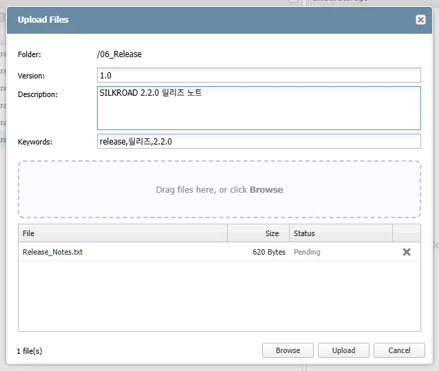
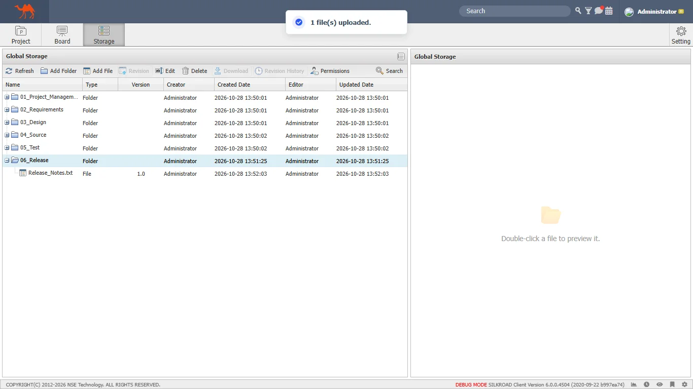
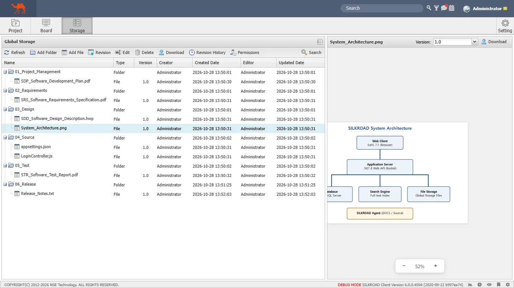
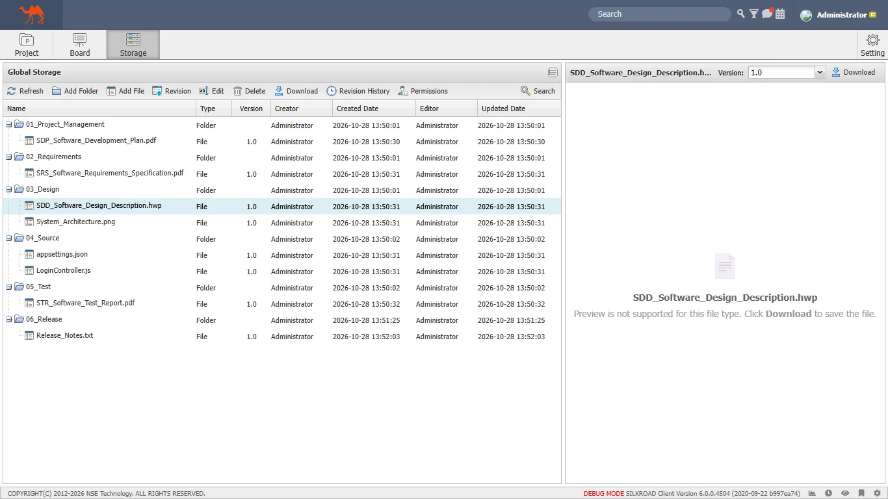
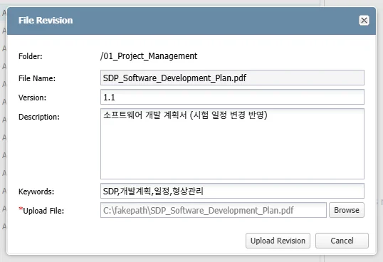
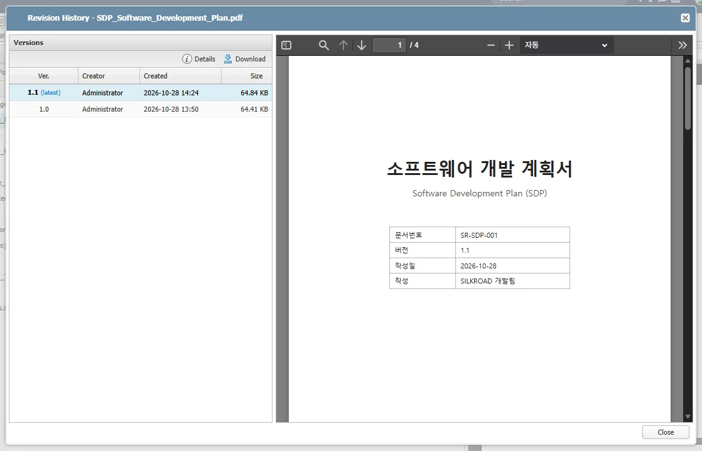
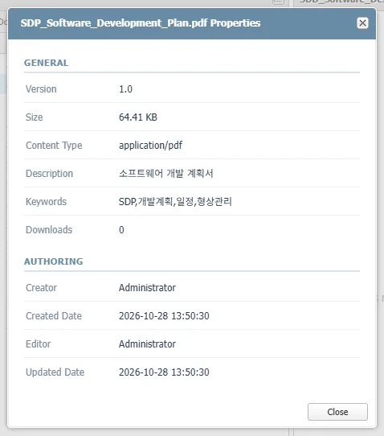
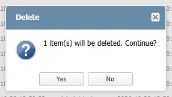
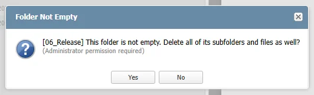
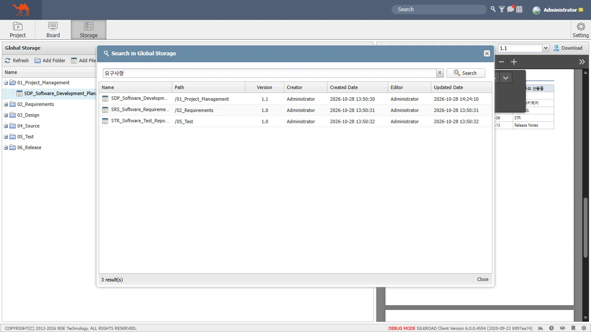

|
Global Storage 는 프로젝트와 관계없이 전사 공용으로 사용하는 산출물 저장소이다. 폴더 단위로 문서·소스·이미지 파일을 등록하고, 파일별 버전(Revision) 이력과 접근 권한을 관리하며, 파일명·키워드·본문 내용으로 검색할 수 있다. 상단 메뉴의 ‘Storage’ 를 클릭하여 진입한다.
|
구분 | 명칭 | 설명 |
| Storage 메뉴 | Global Storage 화면으로 이동 (메뉴명은 관리자가 System 설정에서 변경 가능) |
| 툴바 | 폴더/파일 추가, 리비전, 편집, 삭제, 다운로드, 이력, 권한 설정 버튼 |
Search | 파일명·키워드·본문 내용으로 검색하는 검색 창 실행 | |
DeSelect All | 트리에서 선택된 항목을 모두 선택 해제 | |
트리 목록 | 폴더/파일 목록 (Name, Type, Version, Creator, Created Date, Editor, Updated Date) Ctrl/Shift 키로 다중 선택 가능 | |
Version / Download | 미리보기 중인 파일의 버전 선택 및 선택한 버전 다운로드 | |
미리보기 영역 | 트리에서 더블클릭한 파일의 내용 표시 (PDF, 소스코드, 이미지) |
버튼 | 설명 | 사용 조건 |
Refresh | 트리 목록을 새로 고친다. | 항상 |
Add Folder | 선택한 폴더 하위(미선택 시 최상위)에 폴더를 생성한다. | Write 권한 |
Add File | 선택한 폴더에 파일을 업로드한다. | Write 권한 (최상위 불가) |
Revision | 선택한 파일의 새 버전을 업로드한다. | 파일 1개 선택 + Write 권한 |
Edit | 이름, 버전, 설명, 키워드를 수정한다. | 1개 선택 + Write 권한 |
Delete | 선택한 폴더/파일을 삭제한다. | 선택 항목 전부 Delete 권한 |
Download | 선택한 파일의 최신 버전을 다운로드한다. | 파일 1개 선택 + Download 권한 |
Revision History | 선택한 파일의 버전 이력을 조회한다. | 파일 1개 선택 + Read 권한 |
Permissions | 선택한 폴더/파일의 접근 권한을 설정한다. | 관리자 또는 생성자 |
Search | 검색 창을 연다. | 항상 |
트리의 폴더 또는 파일을 마우스 오른쪽 버튼으로 클릭하면 해당 항목에 사용할 수 있는 메뉴가 표시된다. 권한이 없거나 대상에 맞지 않는 메뉴는 비활성화된다. (폴더: Revision/Revision History/Download 비활성, 파일: Add Folder/Add File 비활성)
|
‘View Details’ 메뉴는 우클릭 메뉴에서만 제공되며, 폴더/파일의 상세 정보 창을 연다. 사용자 권한에 따라 툴바 버튼과 우클릭 메뉴가 미리 활성/비활성화된다. 관리자(계정권한: Admin, Super)는 모든 항목에 대해 권한 검사를 받지 않는다. |
산출물을 분류할 폴더를 생성한다. 폴더를 선택하지 않고 생성하면 최상위(ROOT)에, 폴더를 선택하고 생성하면 해당 폴더 하위에 생성된다.
① 상위 폴더를 선택한다. (최상위에 만들 경우 ‘DeSelect All’ 로 선택을 해제한다.)
② 툴바 또는 우클릭 메뉴에서 ‘Add Folder’ 버튼을 클릭한다.
③ ‘Folder Name’(필수)과 ‘Description’ 을 입력한다.
④ ‘Create’ 버튼을 클릭하거나 Folder Name 에서 Enter 키를 누른다.
|
⑤ 트리에 새 폴더가 추가된다.
|
Folder Name 은 최대 200자, Description 은 최대 1000자까지 입력할 수 있다. 상위 폴더에 Write 권한이 없으면 폴더를 추가할 수 없다. |
선택한 폴더에 하나 이상의 파일을 업로드한다. 여러 파일을 한 번에 선택하거나, 탐색기에서 트리의 폴더로 파일을 끌어다 놓아(Drag & Drop) 업로드할 수 있다.
① 파일을 업로드할 폴더를 선택한다.
② ‘Add File’ 버튼을 클릭한다.
③ ‘Version’, ‘Description’, ‘Keywords’ 를 입력한다. 입력한 값은 이번에 업로드하는 모든 파일에 동일하게 적용된다.
- Version 기본값은 ‘1.0’ 이며, Keywords 는 쉼표(,)로 구분하여 입력한다. (검색에 사용)
④ ‘Browse’ 버튼을 클릭하거나 점선 영역으로 파일을 끌어다 놓아 업로드할 파일을 추가한다.
- 목록의 ‘X’ 아이콘을 클릭하면 해당 파일을 업로드 대상에서 제외한다.
⑤ ‘Upload’ 버튼을 클릭한다.
 |
⑥ 업로드가 완료되면 완료 메시지가 표시되고 트리에 파일이 추가된다.
 |
최상위(ROOT)에는 파일을 업로드할 수 없으며, 반드시 폴더를 선택해야 한다. 파일 목록의 ‘Status’ 는 Pending → Uploading... → Done / Failed 순으로 표시된다. 일부 파일이 실패하면 창이 닫히지 않으며, ‘Upload’ 를 다시 클릭하면 실패한 파일만 재업로드한다. 탐색기에서 트리의 폴더 위로 파일을 끌어다 놓으면 해당 폴더로 업로드 창이 열린다. 파일 위에 놓으면 그 파일이 있는 폴더가 대상이 된다. (폴더 자체는 업로드할 수 없다.) 이름과 크기가 같은 파일은 목록에 한 번만 추가된다. |
트리에서 파일을 더블클릭하면 오른쪽 미리보기 영역에 파일 내용이 표시된다. 파일 형식에 따라 PDF 뷰어, 소스코드 뷰어, 이미지 뷰어가 사용된다.
구분 | 지원 확장자 | 주요 기능 |
페이지 이동, 확대/축소, 문서 내 검색 | ||
소스코드/텍스트 | js, ts, java, cs, c, cpp, h, py, sql, xml, html, css, json, yaml, md, txt, log, csv, ini, properties, sh, bat, ps1 등 | 구문 강조(Syntax Highlight), 줄 번호 표시 ‘Find in file...’ 파일 내 검색 (Enter: 다음, Shift+Enter: 이전) |
이미지 | png, jpg, jpeg, gif, bmp, svg, webp, ico | 마우스 휠: 확대/축소 (10% ~ 1000%) 드래그: 이동, 하단 −/+ 버튼: 배율 조정 |
그 외 | hwp, docx, xlsx, zip 등 | 미리보기 미지원 안내 표시 → ‘Download’ 로 내려받아 확인 |
① 트리에서 소스코드 파일을 더블클릭한다.
② 구문 강조와 줄 번호가 적용된 내용이 표시된다.
③ 상단 ‘Find in file...’ 에 검색어를 입력하고 Enter 키를 누르면 일치하는 부분이 강조 표시되며, ▲/▼ 버튼으로 이전/다음 위치로 이동한다.
|
① 트리에서 이미지 파일을 더블클릭한다.
② 이미지가 화면 크기에 맞게 표시된다.
③ 마우스 휠로 확대/축소하고, 마우스 왼쪽 버튼을 누른 채 드래그하여 이동한다. 하단의 −/+ 버튼으로 배율을 조정할 수 있다.
 |
미리보기를 지원하지 않는 형식(hwp, docx 등)은 안내 메시지가 표시된다. 우측 상단의 ‘Download’ 버튼으로 내려받아 확인한다.
 |
Read 권한이 없는 파일은 미리보기가 되지 않으며 ‘Access Denied’ 메시지가 표시된다. 미리보기 영역 상단의 ‘Download’ 버튼은 Download 권한이 있는 경우에만 표시되며, ‘Version’ 에서 선택한 버전을 내려받는다. |
등록된 파일을 수정한 경우, 새 파일을 별도로 올리지 않고 ‘Revision’ 으로 새 버전을 등록한다. 이전 버전은 삭제되지 않고 이력(Revision History)으로 보관된다.
① 트리에서 리비전할 파일을 선택한다.
② 툴바 또는 우클릭 메뉴에서 ‘Revision’ 버튼을 클릭한다.
③ ‘Upload File’ 의 ‘Browse’ 버튼을 클릭하여 수정한 파일을 선택한다. (기존 파일과 같은 이름의 파일만 선택할 수 있다.)
④ ‘Version’ 을 확인한다. 기존 버전의 마이너 버전을 1 올린 값(예: 1.0 → 1.1)이 자동으로 입력되며 필요 시 수정한다.
⑤ 필요 시 ‘Description’, ‘Keywords’ 를 수정하고 ‘Upload Revision’ 버튼을 클릭한다.
 |
⑥ 트리의 Version 이 새 버전으로 변경되며, 미리보기 영역의 ‘Version’ 콤보에서 이전 버전을 선택해 내용을 비교할 수 있다.
|
리비전 파일은 기존 파일과 이름이 같아야 한다. (대소문자 구분 없음) 이름이 다르면 ‘You can only upload a file with the same name as the previous version.’ 메시지가 표시된다. 버전 자동 제안 규칙: 1.0 → 1.1, 2.3 → 2.4, 1.9 → 1.10, v1.2 → v1.3 파일 이름·버전·설명만 바꾸려면 리비전 대신 ‘Edit’ 를 사용한다. |
파일의 전체 버전 이력을 조회하고, 버전별 내용 미리보기·상세 정보·다운로드를 할 수 있다.
① 트리에서 파일을 선택한다.
② 툴바 또는 우클릭 메뉴에서 ‘Revision History’ 버튼을 클릭한다.
③ 왼쪽 ‘Versions’ 목록에서 버전을 선택하면 오른쪽에 해당 버전의 내용이 표시된다. 최신 버전에는 ‘(latest)’ 가 표시된다.
④ ‘Details’ 버튼(또는 행 더블클릭)으로 버전 상세 정보를, ‘Download’ 버튼으로 선택한 버전 파일을 내려받는다.
 |
폴더 또는 파일의 상세 정보(Properties)를 확인한다.
① 트리에서 폴더 또는 파일을 마우스 오른쪽 버튼으로 클릭한다.
② 우클릭 메뉴에서 ‘View Details’ 를 클릭한다.
③ 상세 정보 창이 표시된다. 확인 후 ‘Close’ 버튼을 클릭한다.
 |
대상 | General | Authoring |
폴더 | Path, Files(하위 폴더 포함 전체 파일 수), Description | Creator, Created Date, Editor, Updated Date |
파일 | Version, Size, Content Type, Description, Keywords, Downloads(다운로드 횟수) | Creator, Created Date, Editor, Updated Date |
리비전 버전 | Version, Size, Content Type, Description, Keywords | Creator, Uploaded Date |
폴더 또는 파일의 이름, 버전, 설명, 키워드를 수정한다. 파일 내용은 변경되지 않는다.
① 트리에서 편집할 폴더 또는 파일을 한 개 선택한다.
② 툴바 또는 우클릭 메뉴에서 ‘Edit’ 버튼을 클릭한다.
③ 항목을 수정한다.
- 폴더: Folder Name(필수), Description
- 파일: File Name(필수), Version, Description, Keywords
④ ‘Save’ 버튼을 클릭한다.
|
여러 항목을 선택한 상태에서는 편집할 수 없다. 한 개만 선택한다. 파일 편집 시 Version 을 비워 두고 저장하면 기존 버전이 유지된다. |
파일을 사용자 PC로 내려받는다.
① 트리에서 파일을 선택한다.
② 툴바 또는 우클릭 메뉴에서 ‘Download’ 버튼을 클릭하면 최신 버전 파일이 다운로드된다.
③ 이전 버전을 받으려면 미리보기 영역의 ‘Version’ 에서 버전을 선택한 후 우측 ‘Download’ 버튼을 클릭하거나, Revision History 창에서 버전을 선택해 ‘Download’ 한다.
폴더는 다운로드할 수 없다. Download 권한이 없는 파일은 다운로드 버튼이 비활성화된다. |
트리에서 폴더 또는 파일을 다른 폴더로 끌어다 놓아(Drag & Drop) 이동한다.
① 이동할 폴더 또는 파일을 선택한다. (Ctrl/Shift 키로 여러 항목 선택 가능)
② 선택한 항목을 마우스로 끌어 대상 폴더 위에 놓는다.
③ 이동이 완료되면 트리가 갱신된다. 이동하지 못한 항목이 있으면 항목별 사유가 표시된다.
폴더 안으로만 이동할 수 있다. 파일 위나 폴더 사이에는 놓을 수 없다. 자기 자신, 하위 폴더, 현재 위치한 폴더로는 이동할 수 없다. |
선택한 폴더 또는 파일을 삭제한다. 여러 항목을 한 번에 삭제할 수 있다.
① 트리에서 삭제할 폴더 또는 파일을 선택한다.
② 툴바 또는 우클릭 메뉴에서 ‘Delete’ 버튼을 클릭한다.
③ 확인 메시지에서 ‘Yes’ 를 클릭한다.
 |
④ 하위 폴더나 파일이 있는 폴더를 삭제하면 ‘Folder Not Empty’ 확인 메시지가 표시된다. ‘Yes’ 를 클릭하면 하위 폴더와 파일까지 모두 삭제된다.
 |
선택한 모든 항목에 Delete 권한이 있어야 삭제할 수 있다. 하위 항목이 있는 폴더의 일괄 삭제는 관리자 권한이 필요하다. 관리자가 아니면 하위 파일/폴더를 먼저 삭제한 후 폴더를 삭제한다. 삭제한 폴더/파일은 복구할 수 없으므로 주의한다. |
폴더 또는 파일별로 역할(Role) 또는 사용자(Member)에게 접근 권한을 부여한다.
① 트리에서 권한을 설정할 폴더 또는 파일을 선택한다.
② 툴바 또는 우클릭 메뉴에서 ‘Permissions’ 버튼을 클릭한다.
③ ‘Model Access Permissions’ 창 왼쪽의 ‘Roles’ 또는 ‘Members’ 탭에서 대상을 더블클릭하여 오른쪽 ‘Assigned Permissions’ 에 추가한다. (추가 시 Read 권한이 기본 체크된다.)
④ 대상별로 Read / Write / Delete / Download / Admin 권한을 체크한다. 휴지통 아이콘을 클릭하면 대상이 제거된다.
⑤ ‘OK’ 버튼을 클릭하여 저장한다.
|
권한 | 허용 기능 |
Read | 파일 미리보기, Revision History 조회, 상세 정보 조회 |
Write | 하위 폴더/파일 추가, Revision, Edit |
Delete | 폴더/파일 삭제 |
Download | 파일 다운로드 |
Admin | 해당 항목의 관리 권한 |
권한 설정은 관리자(계정권한: Admin, Super) 또는 해당 폴더/파일의 생성자(Creator)만 할 수 있다. 관리자(Admin, Super)는 권한 설정과 관계없이 모든 폴더/파일을 사용할 수 있다. 권한 변경 내용은 ‘Refresh’ 후 툴바/우클릭 메뉴의 활성 상태에 반영된다. |
Global Storage 전체에서 파일명, 키워드, 파일 본문 내용으로 파일을 검색한다.
① 툴바 오른쪽의 ‘Search’ 버튼을 클릭한다.
② ‘Search in Global Storage’ 창에 검색어를 입력하고 Enter 키 또는 ‘Search’ 버튼을 클릭한다.
③ 검색 결과(Name, Path, Version, Creator, Created Date, Editor, Updated Date)가 표시된다.
|
④ 결과를 더블클릭하면 트리에서 해당 파일 위치가 펼쳐져 선택되고, 미리보기 영역에 파일이 열리며 검색어가 강조 표시된다.
 |
검색 결과에는 파일만 표시되며, 폴더는 Path 로 확인한다. 본문 검색은 문서/소스코드 형식 파일에 적용된다. 이미지 등은 파일명·키워드·설명으로만 검색된다. 검색 창은 열어 둔 채로 트리 작업을 계속할 수 있다. |
검색 결과가 실제 파일과 맞지 않거나 검색 분석기가 변경된 경우, 관리자가 Global Storage 검색 인덱스를 다시 생성한다. 작업은 서버에서 백그라운드로 진행되므로 창을 닫거나 로그아웃해도 계속된다.
① 화면 하단 오른쪽의 톱니바퀴 아이콘을 클릭하여 ‘SILKROAD Repair Tool’ 을 연다. (Maintenance Mode 가 켜져 있을 때만 표시된다.)
② Maintenance 그룹의 ‘Global Storage Reindexing’ 버튼을 클릭한다.
|
③ ‘Global Storage Reindexing’ 창에서 진행 상태와 통계를 확인하고 필요한 작업 버튼을 클릭한다.
|
버튼 | 설명 |
Start Full Reindex | 전체 검색 인덱스를 다시 생성한다. 진행 중에도 기존 인덱스로 검색은 계속 동작한다. |
Resume | 중단된 전체 재색인을 마지막 체크포인트부터 이어서 진행한다. |
Repair | 자동 색인에 실패한 파일(누락, 오래됨, 삭제된 항목)만 찾아 복구한다. |
Retry Failed | ‘Failed documents’ 목록의 실패 문서만 다시 색인한다. |
Cancel Reindex | 진행 중인 작업을 현재 배치 이후 중지한다. |
상태 표시줄에 ‘The search analyzer has been updated. Run a full reindex for accurate search results.’ 가 표시되면 ‘Start Full Reindex’ 를 실행한다. DRM/암호가 걸린 문서는 본문이 색인되지 않으며 파일명·키워드·설명으로만 검색된다. ‘Failed documents’ 목록의 Kind 로 실패 사유(ExtractFailed: 텍스트 추출 실패, FileMissing: 파일 없음, IndexFailed: 색인 거부, SearchEngineStopped: 검색엔진 중지)를 확인한다. |
번호 | 메시지 | 설명 | 해결방안 |
1 | Access Denied / You do not have permission to view or download this file. | Read 권한이 없는 파일을 미리보기한 경우 | 권한 설정자(관리자 또는 생성자)에게 Read 권한 요청 |
2 | Notice / Files can only be added under a folder. | 최상위(ROOT)에 파일을 추가하려는 경우 | 폴더를 선택한 후 업로드 |
3 | Access Denied / You do not have permission to add a file here. | Write 권한이 없는 폴더에 파일을 추가한 경우 | Write 권한 요청 |
4 | N uploaded, M failed. | 일부 파일 업로드에 실패한 경우 | Status 의 실패 사유 확인 Upload 재클릭으로 재시도 |
5 | Validation / You can only upload a file with the same name as the previous version. | 리비전 파일 이름이 기존 파일과 다른 경우 | 기존 파일과 같은 이름의 파일 선택 |
6 | Notice / Select exactly one item to edit. | 여러 항목을 선택하고 Edit 를 클릭한 경우 | 한 개만 선택 후 Edit |
7 | Access Denied / You do not have permission to delete one or more of the selected items. | 선택 항목 중 Delete 권한이 없는 항목이 있는 경우 | 권한 없는 항목을 제외하고 삭제 Delete 권한 요청 |
8 | Folder Not Empty / This folder is not empty. Delete all of its subfolders and files as well? | 하위 항목이 있는 폴더를 삭제하는 경우 | 관리자: Yes 로 일괄 삭제 그 외: 하위 항목 먼저 삭제 |
9 | Access Denied / Only an administrator or the creator can change permissions for this item. | 관리자 또는 생성자가 아닌 사용자가 권한을 설정하는 경우 | 관리자 또는 생성자에게 요청 |
10 | Items can only be moved into folders. | 파일 위 또는 폴더 사이에 놓은 경우 | 대상 폴더 위에 놓기 |
11 | Cannot move a folder into its child. | 폴더를 자신의 하위 폴더로 이동하는 경우 | 다른 폴더 선택 |
12 | Validation / Folders cannot be downloaded. | 폴더를 다운로드하려는 경우 | 파일 선택 후 다운로드 |
13 | Search Error / An error occurred while searching. | 검색 서버 오류 | 재시도 관리자에게 재색인 요청 |
14 | A server request error occurred. | 서버 통신 오류 | 새로 고침 후 재시도 관리자에게 문의 |